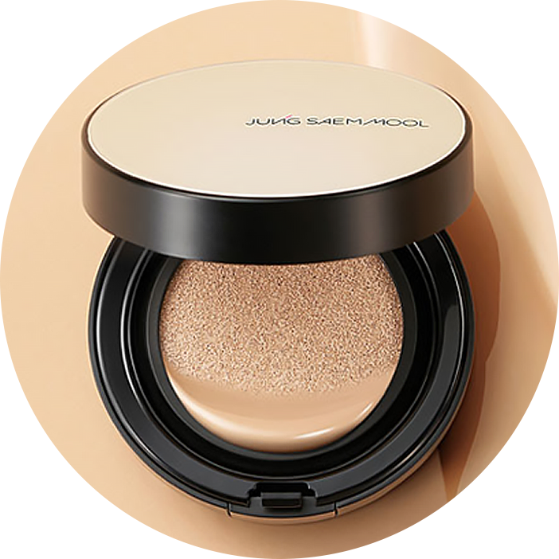

정샘물의 제품들은
메이크업 아티스트 정샘물의 수년간의
노하우와 순수 미술 기법에서 직접 고안한
"KEY 7"법칙을 토대로 설계되어, 트렌드를 쫓기보다는
자신만의 아름다움을 발견할 수 있도록 도와 드립니다.
KEY7
PRINCIPLE
정샘물에는 선과 면,입체를 다루는 7가지 법칙이 존재합니다.
Thin & Thick얼굴이 작고 입체적으로 보이게 하는 테크닉
Warm & Cool어려보이게 하는 동안 테크닉
Wet & Dry오랜 시간 지속되는 롱래스팅 메이크업의 비밀
Lost&Found눈을 크게, 입술은 또렷하게 보이게 하는 기술
Focal Point얼굴에 균형감을 주는 방법
Simple & Complex돋보이고 싶은 것을 강조하는 테크닉
Old & New유행과 개성의 조화로 그 사람만의 스타일 연출